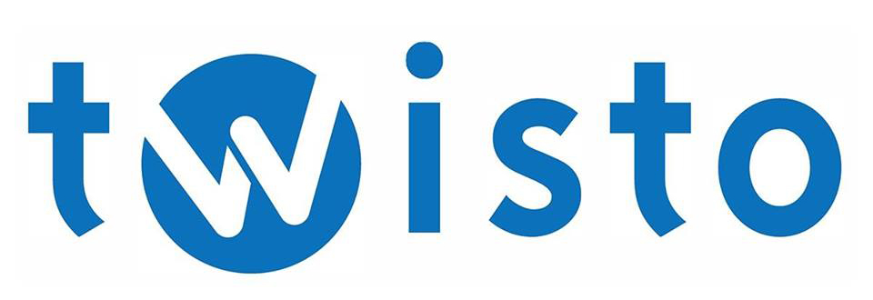
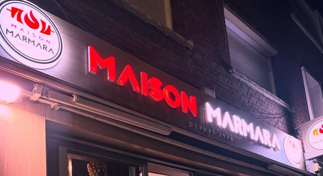
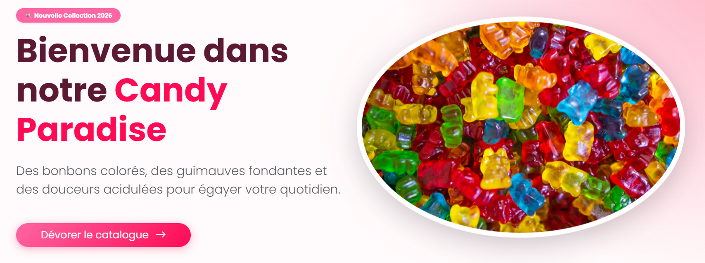
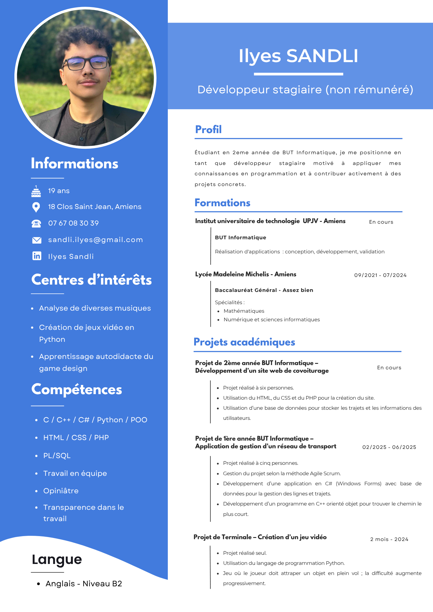

Développeur Full-Stack
Âgé de 19 ans et toujours en quête d'excellence, j'aspire à accomplir de grandes choses avec un impact positif sur autrui. D'un naturel profondément flegmatique, je garde mon sang-froid en toute circonstance ; un atout précieux dans le monde professionnel pour mener à bien des projets.
Transparence technique, robustesse du code et modularité. Chaque brique logicielle doit être posée avec une intention claire, en évitant le superflu pour garantir une maintenabilité optimale. Au-delà de la technique, ma principale devise reste :
« Pour être performant, il faut avant tout s'amuser. »
Développement Full-Stack et conception logicielle, structurés autour des piliers technologiques suivants :
Le développement n'est pas ma seule passion. Grand amateur de musique, j'apprécie particulièrement analyser et décortiquer les compositions, quel que soit le genre. Le jeu vidéo occupe également une place importante, notamment au travers de la compétition sur Super Smash Bros. Ultimate. L'engagement compétitif et la dimension communautaire m'apportent une expérience unique et stimulante.
Traçabilité de mon évolution académique, depuis mes choix de spécialisations scientifiques jusqu'à mon intégration en filière de développement applicatif.
Acquisition des bases de la logique algorithmique et de la réflexion scientifique.
Intégration à l'IUT d'Amiens. Assimilation des langages fondamentaux (HTML, CSS, SQL, C++, C#) et validation des premiers référentiels de compétences académiques.
Spécialisation dans la réalisation d'applications : conception, développement et validation. Focus sur les architectures Full-Stack (PHP, JS, Java), la sécurité des bases de données et la mise en production professionnelle (Stage et projets académiques).

Modélisation et conception d'une application de gestion et d'optimisation d'itinéraires de bus inspirée des systèmes de transport urbain.
Création intégrale d'une solution applicative de covoiturage pour sécuriser et fluidifier les déplacements étudiants vers les campus.

Mission d'intégration responsive en entreprise. Conception visuelle et animation fluide de l'interface vitrine d'une enseigne de restauration.

Développement complet d'une boutique avec backoffice dédié et sécurisation des flux transactionnels via l'API e-Transactions (PBX).
Consultez mon parcours académique détaillé, ainsi que mes compétences et mes informations personnelles.
Télécharger le document CV
La multiplication des projets académiques et mon immersion en stage lors de ma deuxième année de BUT Informatique ont forgé mon socle de compétences en programmation. Surtout, ces expériences m'ont confronté à la réalité du terrain et aux exigences du monde professionnel.
J'ai pris conscience d'un enjeu majeur : l'excellence technique n'est pas une fin en soi. Une architecture de code perd de sa valeur si elle ne répond pas précisément aux attentes. C'est pourquoi j'accorde aujourd'hui une importance capitale aux compétences transverses : l'analyse minutieuse des besoins clients, la communication fluide au sein d'une équipe et la gestion rigoureuse du cycle de vie d'un projet.
Au-delà du code pur, voici l'architecture de ma personnalité et la répartition de mes compétences comportementales (Soft Skills) en contexte de travail.
Je dissèque les problèmes avant d'écrire la moindre ligne de code. J'aime comprendre le "pourquoi" profond d'un bug ou d'une demande client.
Lorsqu'un projet m'est confié, je m'engage à le mener à son terme. Face aux obstacles techniques, je persévère et poursuis mes efforts jusqu'à l'aboutissement complet de mes objectifs.
Habitué à fouiller la documentation technique et à expérimenter par moi-même pour intégrer des technologies non couvertes par le socle académique.
Directeurs d'Établissement - Maison Marmara
Maîtres de stage en charge de la gestion du restaurant. Superviseurs et validateurs de l'architecture du projet web développé lors de mon intégration.
Professeur Évaluateur
Supervision de la soutenance de fin de stage et validation des compétences d'intégration acquises durant la période de formation.
Pour toute analyse de profil ou collaboration technique de fin d'études.
Canal Direct Email
sandli.ilyes@gmail.com
Localisation standard : Amiens, France
Rejoindre sur LinkedIn